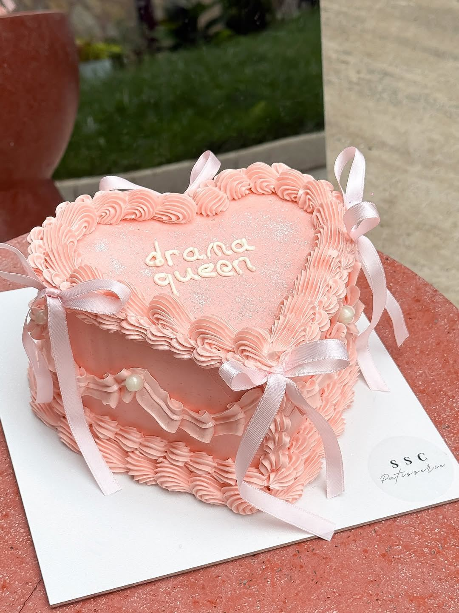
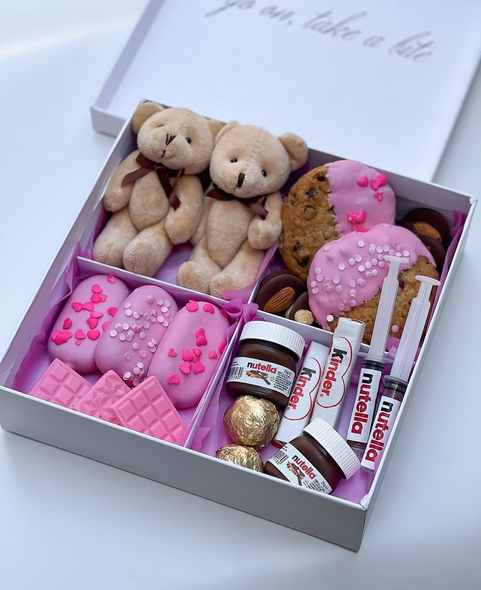
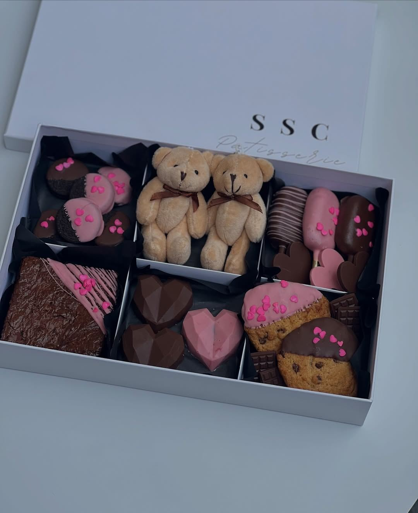

Fikrinizi paylaşın
Beğendiğiniz bir tasarımı, renkleri veya kendi örneğinizi bize gönderin.

Büyükçekmece, İstanbul
Bir doğum günü, küçük bir kutlama ya da içten bir hediye. SSC’de pastaları ve kutuları sevdikleriniz için hazırlıyoruz.
Tasarım, kişi sayısı ve teslim tarihini birlikte netleştirelim.
Kalp biçiminde, kat kat, kurdeleli ya da sade… Kutlamanızın pastasını birlikte düşünelim.
Fotoğraflar örnek çalışmalarımızdır. Benzer bir tasarım ya da aklınızdaki farklı bir fikir için bize yazabilirsiniz.
Instagram’da diğer tasarımlar ↗Sevdiklerinize küçük bir sürpriz
Çikolatalar, süslü kurabiyeler ve küçük detaylarla hazırlanan hediye kutuları. Rengini, içeriğini ve eklemek istediğiniz notu konuşalım.
Kutu seçenekleri, fiyat ve teslimat bilgisi için bizimle iletişime geçebilirsiniz.
Kutular hakkında bilgi alın ↗

Siparişinize başlamadan önce birkaç detayı netleştirelim.
Beğendiğiniz bir tasarımı, renkleri veya kendi örneğinizi bize gönderin.
Pasta için kişi sayısını, kutu için içerik tercihinizi ve istediğiniz tarihi belirtin.
Uygunluk, fiyat ve teslim seçeneğini görüşerek siparişinizi birlikte kesinleştirelim.
Misafirlerimizin gözünden
“Çikolatası ve taze kremasıyla bizi büyüledi.”Muhammed GüngörYorumu Google’da okuyun ↗
“Kızımın 3 yaş pastasını yaptırdım harikaydı görselle birebir geldi biz çok beğendik”Mine PolatYorumu Google’da okuyun ↗
Google yorumlarından kısa alıntılar. Puan ve yorum sayısı 2 Kasım 2026 tarihinde kontrol edilmiştir.
Gel-al ve ziyaret bilgilerini önceden bizimle netleştirebilirsiniz.
Hazırlık süresi, içerik, alerjen ve teslim seçenekleri için bize yazın.
Fiyat ve teslim tarihi, sipariş detaylarınıza göre görüşülür.